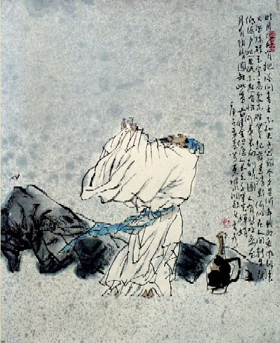

水调歌头·明月几时有
[宋] 苏轼
丙辰中秋，欢饮达旦，大醉，作此篇，兼怀子由。
明月几时有？把酒问青天。不知天上宫阙，今夕是何年？我欲乘风归去，又恐琼楼玉宇，高处不胜寒。起舞弄清影，何似在人间？
转朱阁，低绮户，照无眠。不应有恨，何事长向别时圆？人有悲欢离合，月有阴晴圆缺，此事古难全。但愿人长久，千里共婵娟。
《水调歌头·明月几时有》是宋朝文学家苏轼创作的一阕词。此词作于宋神宗熙宁九年（1076年）中秋，当时作者在密州（今山东诸城）。词以月起兴，以与其弟苏辙七年未见之情为基础，围绕中秋明月展开想象和思考，把人世间的悲欢离合之情纳入对宇宙人生的哲理性追寻之中，表达了词人对亲人的思念和美好祝愿，也表达了在仕途失意时旷达超脱的胸怀和乐观的景致。
这首词是宋神宗熙宁九年（1076年）八月十五日作者在密州时所作。词前的小序交待了写词的过程：“丙辰中秋，欢饮达旦，大醉。作此篇，兼怀子由。”苏轼因为与当权的变法者王安石等人政见不同，自求外放，辗转在各地为官。他曾经要求调任到离苏辙较近的地方为官，以求兄弟多多聚会。熙宁七年（1074年）苏轼差知密州。到密州后，这一愿望仍无法实现。熙宁九年中秋，皓月当空，银辉遍地，词人与胞弟苏辙分别之后，已七年未得团聚。此刻，词人面对一轮明月，心潮起伏，于是乘酒兴正酣，挥笔写下了这首词。
此词是中秋望月怀人之作，表达了对胞弟苏辙的无限怀念。词人运用形象描绘手法，勾勒出一种皓月当空、亲人千里、孤高旷远的境界氛围，反衬自己遗世独立的意绪和往昔的神话传说融合一处，在月的阴晴圆缺当中，渗进浓厚的哲学意味，可以说是一首将自然和社会高度契合的感喟作品。
